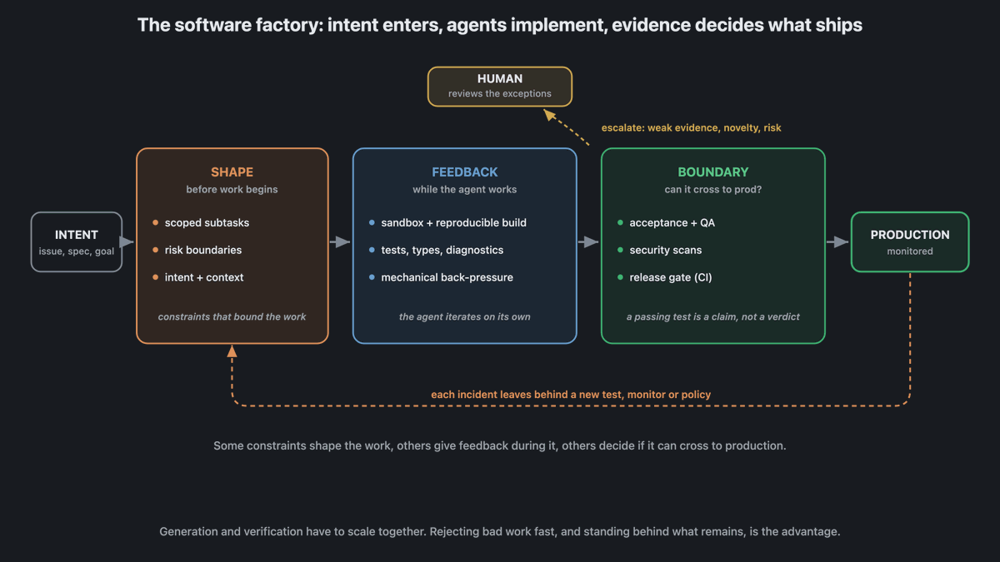
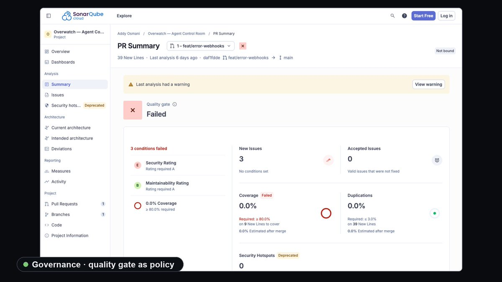
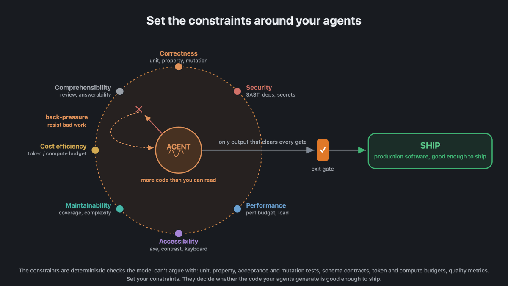

在人类历史上，我们一直靠代码评审来评估代码质量：某人读你写的东西，确保它干净、有想法、快、可理解、测得好。但对agent来说，这条路不可扩展：代码量大到没人读得完。于是越来越多的质量检查必须转移到agent周围的harness、环境和操作系统里。
我仍然读代码、做评审，但对『哪里能用约束当检查』这件事非常审慎。关键认识是：软件质量如今取决于你为agent设定的约束，而不是取决于某个神秘的人工把关环节。
约束定义了系的统允许做什么：把测试和确定性检查抛向agent的提案。正是通过设定并维护这些约束，我们构建出能持续交付高质量生产软件的循环：哪怕agent每天创造几十万甚至上百万次改动。
我们把这类约束叫作质量门（quality gates），它们形式多样：包括常规单元测试、属性测试与验收测试；也包括变异测试：生成代码的各种变体、用同一套测试去跑，确保没人偷偷溜进我们漏掉的bug；还有圈复杂度、行长这类可读性指标。

约束还在『哪些提案会被当作代码变更接受并应用』上起关键作用。当一个变更提案从运行agent的解释器、经过agent controller、走向生产时，我们已经对它做了足够多的检查，足以确信可以安全发布、且影响范围牢牢落在agent的职责内。agent可以提出任何东西，你的约束决定这个提案对你和团队是否足够安全、正确、范围清晰且有用。
这个模型提供了很多，但也漏掉了不少东西，这些遗漏值得今天就想清楚。其一是自主性（autonomy）：agent或许能很好地执行意图，但在信息缺失或目标本身有歧义时可能失败：既适用于任务本身，也适用于它对harness、环境和其他组件参数化的方式。
人类交付不了好代码的很多原因，也是agent会的：支撑不住脚本化压力的脆弱环境、不确定的构建、缺失的权限、薄弱的测试。这要求一个更好的环境：给agent可信的反馈、允许低损伤的失败模式、让成功可以逐步累积起来。我们要的环境是：agent能做真实工作、得到它信任的反馈、失败时也不会造成太大破坏。

另一个重要问题是信任。我们不能轻信地把意图交给哪怕是现代agent这样聪明又稳健的东西，而不检查其正确性。我们从信任出发，但信任必须靠实力挣得。
有些约束在工作的开始之前就塑造它；有些在agent工作时给出反馈；还有些决定它的输出能否跨过生产边界。围绕一个系统建立验证结构有很多种建模方式。

以我的经验，与其只依赖单元测试，不如为你的约束维护一套更宽泛、但刻意选择的检查集合。思路是每个检查有各自独立的责任：从类型安全、性能，到后期的安全扫描。团队也能定义自己的约束，包括ESLint之类的lint工具可以强制的架构规则；很多这类工具内置钩子，出问题时可以把agent或人类拉进来。
眼下，有用agent输出和『垃圾货』之间的差别，很大程度上仍取决于操作这条循环的团队能力。AI给了我们高产量代码生成和速度，但这也意味着让人类逐个评审每一处改动变得越发困难：你必须刻意决定把他们的注意力放在哪里。
如果一个人类检查被塞进一个以机器速度运转的流程里，别惊讶它会拖累生产力。人类注意力稀缺而宝贵，我们应当主动把它导向那些最精细、最需要我们判断力的问题上。下游的人类只应在约束的自动化护栏断裂时被拉进来。未来的『人类代码评审』会非常不一样。

正确性是一个重要维度，但你也许还关心可维护性、性能、安全、效率与可理解性。就像正确性可以分解成多种信号类型，质量的其余部分也一样。重要的不仅是我们设了多少约束，更在于它们是否足够有挑战性以满足我们对质量和生产就绪的要求。软件质量不是一个单一指标：把它想成一组对你和团队重要性各异的信号集合。
Back-pressure可以通过许多工具实现：编译器拒绝无效代码、测试失败、安全策略封锁不良实践、CI拒绝部署。理想情况下它贯穿整个循环，而不是在全部工作之后来一次单独的评审。约束与back-pressure让agent在问题发生前就抓住坏活。
如果因为变更量太大、超出了工具消化能力而无从施加约束怎么办？我们会被迫建一条队列、依赖一个以人类速度移动的验证系统。要规模化，我们想尽可能把更多工作推进验证循环，而不是等到最后。

如果验证循环里空间不够，有几件事可做。第一，扩展验证系统、为约束与回推创造更多容量；第二，降低agent生成新改动的速率，让验证追得上工作总量；第三，下调质量线，让验证不那么强硬地回推。从规模化视角，这三点我们都要准备好。与此同时，我们也要意识到：在某些方向『解除约束』反而能干成更多：比如用一批agent开发者或自动化软件工厂来创造改动，而不必等我们逐一评审。
在某些地方我们可以给agent更多自由，只要在另一些地方保持更紧的约束。在最关心处设更紧的约束，就能在不牺牲质量的前提下最大化吞吐。贯穿这些决策有很多选项，最明显的是要在质量的不同维度间权衡：安全很重要，但我们也得在交付安全与按时交付产品之间取舍。从一端强调创新、到另一端强调质量，是一条光谱，我们必须选择自己站的位置。
我们希望把来自环境和系统的清晰反馈送回agent或团队，让人们能专注于品味、意图与架构这些更主观的事。如果能让人类待在约束的安全区间里，就不必费力去排查哪里出了问题。软件质量不止是正确性，还包括可维护性、好性能、安全、效率、易理解：所有帮我们达标并保持生产流动的约束，都在交付管线里制造back-pressure。
我们要刻意决定在哪里施加强约束、在哪里移除或放松它们。在能同时服务双目标的地方施加强约束，两者都不服务就移除，并根据情形随时抬高或降低标准。说到底，软件系统里这些不同位置的约束，正是让软件质量可强制执行的来源：它们给质量以牙齿。
我们不想等到管线末端、等CI系统简单告诉你『不修问题就不许部署』。我们想尽可能早地、通过每条可能的通路使用这些信号。这套体系里最核心的约束，是我们自己给自己下的那条：为构建与运行这套系统的决策和行动负责。但和所有约束一样，我们需要对『我们的判断要多克制、多回推、以及在何时作最后一道检查』做出深思熟虑的取舍。
质量就在我们为agent布置的约束里。所以当你在为自己的应用思考质量时，不妨用这句话作为题设：拿出一套属于你自己的、由约束驱动的方案。
参考：https://x.com/addyosmani/status/2087427868343373919